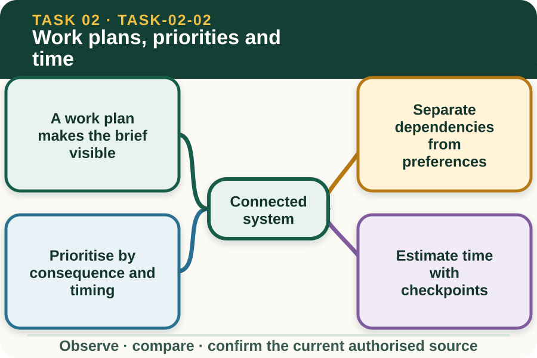

Classroom presentation · 8 slides
Work plans, priorities and time
Task 2 · 1 of 8
Work plans, priorities and time
Turn a supervisor brief into a sequenced, realistic work plan with checkpoints.

Speaker notes
Teaching move (web-deck purpose): Use the module visual and the fictional worked example to move students from observation to a source-led decision. Ask students to name the evidence, the authority gap and the next safe communication step. Misconception and help: A dependency blocks or changes a later step; a preference mainly affects convenience. Ask: Can the next step be accurate without this? Applied action: Plan a fictional 70-minute job. Turn a teacher-provided routine work brief into a one-page plan with tasks, time windows, roles and hold points. Use only fictional data and leave practical procedures to the teacher's authorised source. Boundary: This supplementary learning draws on mapped AHCWRK212, AHCWRK213 concepts. Current signed TAS and RTO documents control cohort delivery, assessment and competency decisions; current workplace procedures, supervision and authorised sources control real work. [Sources] - Source basis: AHCWRK212 Release 1 requirements for confirming work plans, schedules, timelines, materials, equipment and priorities, supported by AHCWRK213 communication and record requirements. Local schedules and methods remain controlling. - Visual visual-task-02-02: Generated locally from accepted Stage 05 module headings; no external image copied. - Course visual manifest: work/pi/visuals/visual-manifest.json
Task 2 · 2 of 8
Map the learning
- A work plan makes the brief visible
- Separate dependencies from preferences
- Prioritise by consequence and timing
Retrieve: Which item is a dependency rather than a preference?
Speaker notes
Teaching move (learning map): Use the module visual and the fictional worked example to move students from observation to a source-led decision. Ask students to name the evidence, the authority gap and the next safe communication step. Misconception and help: A dependency blocks or changes a later step; a preference mainly affects convenience. Ask: Can the next step be accurate without this? Applied action: Plan a fictional 70-minute job. Turn a teacher-provided routine work brief into a one-page plan with tasks, time windows, roles and hold points. Use only fictional data and leave practical procedures to the teacher's authorised source. Boundary: This supplementary learning draws on mapped AHCWRK212, AHCWRK213 concepts. Current signed TAS and RTO documents control cohort delivery, assessment and competency decisions; current workplace procedures, supervision and authorised sources control real work. [Sources] - Source basis: AHCWRK212 Release 1 requirements for confirming work plans, schedules, timelines, materials, equipment and priorities, supported by AHCWRK213 communication and record requirements. Local schedules and methods remain controlling. - Visual visual-task-02-02: Generated locally from accepted Stage 05 module headings; no external image copied. - Course visual manifest: work/pi/visuals/visual-manifest.json
Task 2 · 3 of 8
Notice the evidence
A work plan makes the brief visible
A useful plan translates an expected outcome into tasks, sequence, resources, responsibilities, timing and checks. It gives the worker and supervisor a shared view of what should happen and what information remains unresolved.
Planning does not authorise practical work by itself. The current workplace procedure and supervisor confirm the method, resources and boundaries before the learner begins safely and lawfully.
Separate dependencies from preferences
A dependency is something that must occur before another step can begin, such as receiving confirmed stock information before finalising a count. A preference is a convenient order that may be changed without affecting the result.
Sequencing dependencies first prevents rework and unsafe improvisation. It also makes hold points visible where the team must check a source, condition or supervisor decision before progressing.
Speaker notes
Teaching move (theory idea 1): Use the module visual and the fictional worked example to move students from observation to a source-led decision. Ask students to name the evidence, the authority gap and the next safe communication step. Misconception and help: A dependency blocks or changes a later step; a preference mainly affects convenience. Ask: Can the next step be accurate without this? Applied action: Plan a fictional 70-minute job. Turn a teacher-provided routine work brief into a one-page plan with tasks, time windows, roles and hold points. Use only fictional data and leave practical procedures to the teacher's authorised source. Boundary: This supplementary learning draws on mapped AHCWRK212, AHCWRK213 concepts. Current signed TAS and RTO documents control cohort delivery, assessment and competency decisions; current workplace procedures, supervision and authorised sources control real work. [Sources] - Source basis: AHCWRK212 Release 1 requirements for confirming work plans, schedules, timelines, materials, equipment and priorities, supported by AHCWRK213 communication and record requirements. Local schedules and methods remain controlling. - Visual visual-task-02-02: Generated locally from accepted Stage 05 module headings; no external image copied. - Course visual manifest: work/pi/visuals/visual-manifest.json
Task 2 · 4 of 8
Use the source boundary
Prioritise by consequence and timing
Priority is not simply the task someone mentions most loudly. Consider safety, animal welfare, product quality, environmental conditions, deadlines, resource availability and how one delay affects other people.
When priorities compete, show the conflict to the supervisor with evidence. A learner should not silently drop a task or invent a new deadline to make the plan appear achievable.
Estimate time with checkpoints
Time estimates should include preparation, the authorised work, checks, communication, record completion and orderly finish. A single end time hides where the plan may be slipping.
Checkpoints compare planned and actual progress while there is still time to respond. They are opportunities to report a delay, seek assistance or confirm a revised priority rather than rushing the remaining work.
Speaker notes
Teaching move (theory idea 2): Use the module visual and the fictional worked example to move students from observation to a source-led decision. Ask students to name the evidence, the authority gap and the next safe communication step. Misconception and help: A dependency blocks or changes a later step; a preference mainly affects convenience. Ask: Can the next step be accurate without this? Applied action: Plan a fictional 70-minute job. Turn a teacher-provided routine work brief into a one-page plan with tasks, time windows, roles and hold points. Use only fictional data and leave practical procedures to the teacher's authorised source. Boundary: This supplementary learning draws on mapped AHCWRK212, AHCWRK213 concepts. Current signed TAS and RTO documents control cohort delivery, assessment and competency decisions; current workplace procedures, supervision and authorised sources control real work. [Sources] - Source basis: AHCWRK212 Release 1 requirements for confirming work plans, schedules, timelines, materials, equipment and priorities, supported by AHCWRK213 communication and record requirements. Local schedules and methods remain controlling. - Visual visual-task-02-02: Generated locally from accepted Stage 05 module headings; no external image copied. - Course visual manifest: work/pi/visuals/visual-manifest.json
Task 2 · 5 of 8
Connect evidence to action
Plan resources and team responsibilities
A resource check identifies materials, equipment, information, people and access needed for each part of the job. Availability must be confirmed; a list copied from an earlier task is not evidence that today's resources are suitable.
Responsibility should be clear enough that each person knows their part, the handover point and who checks completion. Allocation should consider training and capacity rather than assumptions about age, gender, background or confidence.
Update the plan honestly
A plan is a controlled working document, not a promise that conditions will never change. When weather, resources, defects or another priority alters the job, record the confirmed revision and communicate it to affected people.
Do not overwrite the story by pretending the original estimate was correct. A useful review compares plan and actual outcome, explains the reason for a change and identifies one improvement for the next similar task.
Speaker notes
Teaching move (theory idea 3): Use the module visual and the fictional worked example to move students from observation to a source-led decision. Ask students to name the evidence, the authority gap and the next safe communication step. Misconception and help: A dependency blocks or changes a later step; a preference mainly affects convenience. Ask: Can the next step be accurate without this? Applied action: Plan a fictional 70-minute job. Turn a teacher-provided routine work brief into a one-page plan with tasks, time windows, roles and hold points. Use only fictional data and leave practical procedures to the teacher's authorised source. Boundary: This supplementary learning draws on mapped AHCWRK212, AHCWRK213 concepts. Current signed TAS and RTO documents control cohort delivery, assessment and competency decisions; current workplace procedures, supervision and authorised sources control real work. [Sources] - Source basis: AHCWRK212 Release 1 requirements for confirming work plans, schedules, timelines, materials, equipment and priorities, supported by AHCWRK213 communication and record requirements. Local schedules and methods remain controlling. - Visual visual-task-02-02: Generated locally from accepted Stage 05 module headings; no external image copied. - Course visual manifest: work/pi/visuals/visual-manifest.json
Task 2 · 6 of 8
Retrieve and check
Which item is a dependency rather than a preference?
- Using the blue clipboard because it is easier to recognise.
- Confirming which delivery is current before recording its stock count.
- Completing two independent tidy-up tasks in a preferred order.
Teacher reveal
Correct. The record cannot be accurate until the controlling source is known.
Ask: Can the next step be accurate without this?
Speaker notes
Teaching move (retrieval): Use the module visual and the fictional worked example to move students from observation to a source-led decision. Ask students to name the evidence, the authority gap and the next safe communication step. Misconception and help: A dependency blocks or changes a later step; a preference mainly affects convenience. Ask: Can the next step be accurate without this? Applied action: Plan a fictional 70-minute job. Turn a teacher-provided routine work brief into a one-page plan with tasks, time windows, roles and hold points. Use only fictional data and leave practical procedures to the teacher's authorised source. Boundary: This supplementary learning draws on mapped AHCWRK212, AHCWRK213 concepts. Current signed TAS and RTO documents control cohort delivery, assessment and competency decisions; current workplace procedures, supervision and authorised sources control real work. [Sources] - Source basis: AHCWRK212 Release 1 requirements for confirming work plans, schedules, timelines, materials, equipment and priorities, supported by AHCWRK213 communication and record requirements. Local schedules and methods remain controlling. - Visual visual-task-02-02: Generated locally from accepted Stage 05 module headings; no external image copied. - Course visual manifest: work/pi/visuals/visual-manifest.json Use option-specific feedback after the learner commits to an answer.
Task 2 · 7 of 8
Construct a source-led response
Build a short work plan from a fictional supervisor brief. Include dependencies, one hold point, resources, responsibilities, a checkpoint and a response to a likely delay.
- The expected outcome is…
- Before step two, we must confirm…
- Resources and responsibilities are…
- The hold point is…
- At the checkpoint we compare…
- If the plan slips, I report…
Success criteria
- Shows a logical sequence and dependency
- Includes resources, roles and a decision point
- Uses checkpoints and honest revision
- Does not invent a practical method or assessment condition
Speaker notes
Teaching move (guided written response): Use the module visual and the fictional worked example to move students from observation to a source-led decision. Ask students to name the evidence, the authority gap and the next safe communication step. Misconception and help: A dependency blocks or changes a later step; a preference mainly affects convenience. Ask: Can the next step be accurate without this? Applied action: Plan a fictional 70-minute job. Turn a teacher-provided routine work brief into a one-page plan with tasks, time windows, roles and hold points. Use only fictional data and leave practical procedures to the teacher's authorised source. Boundary: This supplementary learning draws on mapped AHCWRK212, AHCWRK213 concepts. Current signed TAS and RTO documents control cohort delivery, assessment and competency decisions; current workplace procedures, supervision and authorised sources control real work. [Sources] - Source basis: AHCWRK212 Release 1 requirements for confirming work plans, schedules, timelines, materials, equipment and priorities, supported by AHCWRK213 communication and record requirements. Local schedules and methods remain controlling. - Visual visual-task-02-02: Generated locally from accepted Stage 05 module headings; no external image copied. - Course visual manifest: work/pi/visuals/visual-manifest.json
Task 2 · 8 of 8
Close the loop
Plan a fictional 70-minute job
Turn a teacher-provided routine work brief into a one-page plan with tasks, time windows, roles and hold points. Use only fictional data and leave practical procedures to the teacher's authorised source.
- Name the strongest evidence in the scenario.
- Explain the decision or referral it supports.
- State which current source or authorised person controls real work.
Boundary: This supplementary learning draws on mapped AHCWRK212, AHCWRK213 concepts. Current signed TAS and RTO documents control cohort delivery, assessment and competency decisions; current workplace procedures, supervision and authorised sources control real work.
Speaker notes
Teaching move (exit and application): Use the module visual and the fictional worked example to move students from observation to a source-led decision. Ask students to name the evidence, the authority gap and the next safe communication step. Misconception and help: A dependency blocks or changes a later step; a preference mainly affects convenience. Ask: Can the next step be accurate without this? Applied action: Plan a fictional 70-minute job. Turn a teacher-provided routine work brief into a one-page plan with tasks, time windows, roles and hold points. Use only fictional data and leave practical procedures to the teacher's authorised source. Boundary: This supplementary learning draws on mapped AHCWRK212, AHCWRK213 concepts. Current signed TAS and RTO documents control cohort delivery, assessment and competency decisions; current workplace procedures, supervision and authorised sources control real work. [Sources] - Source basis: AHCWRK212 Release 1 requirements for confirming work plans, schedules, timelines, materials, equipment and priorities, supported by AHCWRK213 communication and record requirements. Local schedules and methods remain controlling. - Visual visual-task-02-02: Generated locally from accepted Stage 05 module headings; no external image copied. - Course visual manifest: work/pi/visuals/visual-manifest.json